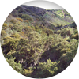
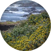
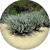
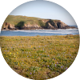
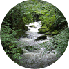

» Plant Type
» Soil Type
» Watering Needs
» Appropriate Location
» Climate Appropriate Plants
» Climate Change
» The Fungus known as Phytophthora
Plant Community
A plant community is an assemblage of plant (animal and fungi) species that have co-evolved through time within a specific geographic area. The characteristics of every plant community are influenced by the physical environment – such as geology, topography and climate – as well as human disturbances, such as urban development. Several different indigenous plant communities remain in San Francisco. As in the rest of California, wetlands and riparian areas used to be abundant throughout the city, but are now restricted to only a few locations.
Chaparral: A
woody shrubland plant community that features sun-loving plants with hard, sclerophyllous evergreen
leaves. San Francisco harbors a form of maritime chaparral on the Presidio’s serpentine bluffs,
dominated by blue-blossom ceanothus and historically our endemic manzanitas. The southeastern slopes of
Mt. Tamalpais in Marin County harbor the closet example of classic California chaparral.
Plant Examples: Manzanita, Ceanothus, and Flannel Bush
Coastal
Scrub: Coastal scrub is one of the predominant remaining natural communities in San
Francisco. This plant community is characterized by low-growing, aromatic shrubs, such as coyote bush
sticky monkey flower and California sagebrush. Coastal scrub thrives in the fog belt. We also have a
more moisture-loving version of coastal scrub characterized by deciduous plants like pink-flowering
currant, California hazelnut and oceanspray, which can be found on Mt. Davidson in particular.
Plant Examples: California blackberry, Coffeeberry, and Yerba Buena.
Dunes: As much as a
quarter to a third of San Francisco was once covered in sand dunes, and is still underlain by sandy
soils. Remnants of a once biodiverse dune ecosystem still support a unique array of plants and animals.
Plants in the coastal strand - just above the beach high tide line - commonly have small, waxy or
succulent leaves, allowing them to survive in the dry, nutrient–poor sand while being battered by wind
and salt spray. Behind the coastal strand are the “foredunes” which are more stabilized and
support perennial shrubs. The dunes once stretched from Ocean Beach across the peninsula to Yerba Buena
Cove (Downtown today), and harbored ponds and creeks. Wildflower meadows, dense dune scrub and oak
woodlands are still found in the dunes.
Plant Examples: Dune strawberry, Lupines, and Yellow Sand Verbena.
Grassland/Prairie: Formerly the most common
habitat in San Francisco, remnants of grasslands support a wide array of wildlife. Composed of deep
rooted, soil-stabilizing, perennial bunch grasses, coastal prairies are important hunting grounds for
raptors, coyote, and other predators, while also harboring a diversity of wildflowers - including rare
and endangered plants that support bees and butterflies.
Plant Examples: Yarrow, Purple Needle Grass, Coast Iris and Blue Wild Rye.
Riparian: This
plant community is associated with the linear course of creeks and streams and composed of various
species of trees, shrubs, and herbs that thrive in a nearly wetland environment They purify water by
removing contaminants, control erosion, and provide habitat for a variety of plants and animals. San
Francisco had many miles of riparian habitat before most of our creeks were buried in culverts and made
part of the sewer system.
Plant Examples: Arroyo Willow, Wax Myrtle and Creek Dogwood
 Wetland:
Wetlands are among the most important ecosystems worldwide. They produce high levels of oxygen, filter
chemicals, reduce flooding and erosion, recharge groundwater, and provide critical habitat. There are
many different kinds of wetlands, and San Francisco has several, including freshwater, saltwater, and
riparian.
Wetland:
Wetlands are among the most important ecosystems worldwide. They produce high levels of oxygen, filter
chemicals, reduce flooding and erosion, recharge groundwater, and provide critical habitat. There are
many different kinds of wetlands, and San Francisco has several, including freshwater, saltwater, and
riparian.
Plant Examples: Pickleweed, Gumplant, Rushes, and Sedges
 Oak
Woodland: Among the most characteristic of Bay Area plant communities, oak woodlands made
up the only extensive wooded areas of San Francisco prior to European contact. Dominated by coast live
oaks, these complex and diverse habitats harbor more wildlife than any other terrestrial plant community
in the Bay Area and provide a sheltered environment for many shade-tolerant species. The Richmond
District has the most oak woodlands remaining in the city, including in northeastern Golden Gate Park
and along the southern border of the Presidio.
Oak
Woodland: Among the most characteristic of Bay Area plant communities, oak woodlands made
up the only extensive wooded areas of San Francisco prior to European contact. Dominated by coast live
oaks, these complex and diverse habitats harbor more wildlife than any other terrestrial plant community
in the Bay Area and provide a sheltered environment for many shade-tolerant species. The Richmond
District has the most oak woodlands remaining in the city, including in northeastern Golden Gate Park
and along the southern border of the Presidio.
Plant Examples: California bee plant, Toyon and Osoberry.
Street Trees
The Urban Forestry Council annually reviews and updates a list of trees, in collaboration with public and non-profit urban forestry stakeholders, including the Urban Forestry Division of the Department of Public Works and Friends of the Urban Forest. The list includes three sections, 1(A), 2(B), and 3 (C) defined by locations suited for different tree types. Just as with landscaping in general, it is important to match carefully the conditions of a site with the tree you choose. Please note that while the list contains recommendations that are known to do well in many locations in San Francisco, no tree is appropriate for every potential tree planting location. The list should be used as a guideline for choosing which street tree to plant, but should not be used without the help of a tree professional.
The Plant Finder can be used to search for street trees on the approved list. To search, filter results by Plant Type (Select Tree (Evergreen) and Tree (Deciduous) and by Appropriate Location (select Sidewalk). For each tree, you will be able to see if it is on an approved street tree list.
Approved Street Tree List:
1 (A): Tree species, varieties, and cultivars that do well in the San Francisco area.
2 (B): Tree species, varieties, and cultivars that do well with certain special considerations, which may not be appropriate for planting broadly throughout the San Francisco area.
3 (C): Species that need further evaluation. Not included in the SF Plant Finder.
NA: The plant or tree is not on a recommended street tree list.
Plant Type
Annuals: These are plants that perform their entire life cycle from seed to flower to seed again within a single year. All roots, stems, and leaves of the plant die annually. Only the dormant seed bridges the gap between one generation and the next.
Perennials: The term refers to any plant that persists for more than one or two growing seasons. Some perennials persist for many years including those in which the top portion of the plant dies back each dry season and grows back the following winter from the same root system. Many if not most perennials (in California) keep their leaves all year round.
Evergreen: Plants which retain their foliage in all seasons and are green all year round are evergreens. This does not mean, however, that evergreens never lose their leaves. Evergreens conserve energy and nutrients by continually growing new leaves as old ones are shed during all seasons, but particularly during the dry season.
Deciduous: Plants which shed their foliage annually at the end of the growing season are more usually associated with the deciduous forests of the eastern third of the U.S. California harbors many deciduous species of plants as well. Instead of shedding leaves due to cold, many deciduous plants in California’s Mediterranean climate zone shed their leaves during the dry season, in order to save energy and nutrients.
Tree/Shrub: Trees are different from shrubs in that they have a single central stem or trunk, while shrubs often have multiple, thinner stems. Trees also tend to have a distinct shape and crown, while shrubs may consist of a large hedge that spreads over the ground. The other difference is that trees are generally thicker in the trunk and taller than shrubs.
Soil Type
Rock: Soil that is very pebbly, gritty, and composed mostly of large pieces of rocks. Rocky soil tends to have fewer nutrients than other soil types since it has less organic matter. Rocky soil often does not hold water well, although this can vary.
Clay: Soil composed of very small and fine particles that clump together and prohibit water and nutrient movement. They feel slick and sticky when wet and hold water well, but resist water infiltration, especially when they are dry. Puddles often form on clay soils, and they easily become compacted.
Loam: Soil made of a mixture of sand, clay, and organic matter. Loam soils are very nutrient rich and store water well because of the heavy grittiness given from the sand, but also have exceptional drainage. When squeezed in your fist, moist loam will form a ball which crumbles when poked with a finger.
Sand: Soil composed of relatively large, coarse particles visible to the eye and usually light in color. Sandy soil is loose and allows water and nutrients to penetrate easily, but also drains very rapidly and does not always allow for water and nutrient retention. Sand feels coarse when wet or dry, and will not form a ball when squeezed in your fist.
All: These plant species are extremely versatile and can grow in any soil type (Rock, Clay, Loam, Sand).
Watering Needs
The WUCOLS system was used as a guide for information about species water needs. This field is designed to indicate average watering needs, with the assumption that the plant is already established, having survived a dry season. Plants may have different watering needs during their establishment phase. 99% of these plants should be able to survive without added water if they are planted in the right location. For example, a plant that is tagged “moderate” is usually a wetland plant, and so they are adapted to the summer drought insofar as their soil remains wet enough throughout the dry season. These plants are best planted at the bottom of a slope, or perhaps next to a fence, on the other side of which a neighbor may be watering regularly. If they are planted in an average moisture location then they will require water.
None: No watering needed after establishment.
Low: Water about once or twice a month for the duration of the six month dry season. These plants can definitely survive the dry season with no added water if they are planted in the right place.
Moderate: Water about once a week in a sunny location. Ideally, try to plant these species in low-lying and naturally moist areas and/or with ample shade..
Appropriate Location
Garden: Recommended plant for gardens or private property not within the public right-of-way.
Potted Plants: These are all small stature plants that could do well in pots with the proper amount of watering. Even the most sun-loving, drought tolerant perennials need some water when living in a planter pot.
Roof: A living roof is a roof of a building which includes vegetation and a growing medium as an integral component of the roofing system. Living roofs also include a water proofing and root repellant layer, a drainage system, filter fabric and sometimes an irrigation system. Living roofs are also called green roofs or vegetated roofs. The plants that do well on top of a roof tend to have shallow, fibrous roots and be drought tolerant, perennial or self-seeding, low-nutrient tolerant, heat tolerant, lightweight, adapted to sandy or free-draining soils, and low maintenance. The genus Sedum from the family Crassulaceae is the most commonly used for living roofs, but many other drought tolerant plant types can be successfully grown. In San Francisco, the lack of precipitation for six or more months of the year means that even extremely drought tolerant living roof plants will most likely need to be irrigated, at least during the establishment period.
Sidewalk: Recommended plants for sidewalk landscaping or median planting. Recommended street trees for sidewalks and other public spaces based on the Urban Forestry Council's annually updated street tree list.
Stormwater:These plants are recommended by the San Francisco Public Utilities Commission for planting in stormwater facilities or stormwater gardens when complying with the City's Stormwater Ordinance. You can use the Plant Finder to access this entire list.
Climate Appropriate Plants
SF Native: These plants are indigenous to the northern San Francisco peninsula, and generally more broadly as well. A plant in this category could be endemic to the city itself or to the Bay Area or it could also have a range across North America and even Europe.
CA Native: These plants are indigenous to California, in particular the California Floristic Province, but are not native to San Francisco. This means they were never recorded here by early botanists, and are known to have ranges that do not include the northern tip of the peninsula.
Exotic: The plants are not indigenous to San Francisco, nor to the rest of California. They may be from the eastern United States or anywhere else on Earth.
Climate Change
Global climate change and biodiversity are the two most important environmental issues of the 21st century. The disruption and destruction of ecosystems around the world continues to contribute to global biodiversity loss. Ecological collapse also contributes to global climate change, which in turn may have profound effects on global biodiversity. Ecological restoration heals ecosystems and biodiversity; we should continue to expand ecological restoration in San Francisco. The healthier (i.e., less impacted by invasive species and other problems) our local ecosystems are, the more biodiverse and thus, more resilient they will be. Using local native plants for all forms of landscaping and greening in the city can make a real and significant contribution to the health, vitality and climate resilience of San Francisco’s natural heritage.
The Fungus known as Phytophthora
Sudden oak death or Phytophthora ramorum is the most well-known phytophthora species. Although sudden oak death is now endemic in coastal California, San Francisco has been spared so far from the fungus invading our oak woodlands. Meanwhile, California native plant nurseries are suffering from infestations of more species of Phytophthora, and they are having to employ rigorous best management practices to avoid spreading the disease from the nursery environment to parks and wildlands.